サッカーで「この布陣なら相手の4-4-2をどう崩せるか」を延々と考えてしまうのと同じくらい、ダビマス(ダービースタリオン マスターズ)の配合を考える時間が、たまらなく好きなんです。
「この種牡馬とこの繁殖牝馬を掛け合わせたら、ニトロはどうなる?」
「クロスは発生する? 理論は成立する?」
……これ、頭の中だけで組み立てるのは正直かなり大変で。試合中に監督が紙のボードで選手を動かすように、配合にも「作戦ボード」が欲しくなります。
その作戦ボードが、今回ご紹介する 「ダビふぁく」 です。
統合版 になって、ホーム画面に「配合」をいくつも並べておけるようになりました。さらに、馬を探す「ダビ娘」 と、繁殖牝馬から3代先まで試せる「配合理論補助」 も合流しています。最新版では、段階配合の危険を自動で見張ってくれる 工程診断 や、馬ごとに残せる メモ も加わっています。初めての方でも迷わないように、チャプターごとに分けてじっくり説明していきますね。
かなり長い記事になりますが、途中で休憩を挟みながら、ゆっくりお付き合いください。
ひとことで言うと、ダビマスの配合検討を助けてくれる「作戦ボード」 です。
つまり、「監督が頭の中でやっていたことを、全部ピッチの上に可視化してくれる」ツールです。
アプリのインストールは不要で、スマホのブラウザから開けます。ブラウザの「ホーム画面に追加」をしておくと、アプリみたいにワンタップで起動できるので、断然おすすめです。私は1日に何回開いているか、もう数えていません。
これまでのダビふぁくは、いわば「1面だけの作戦ボード」でした。別の配合を考え始めると、前の検討内容は消してしまうしかなかったんです。統合版では、ここが大きく変わりました。
この記事は最新版に合わせて全面的に書き直しました。大きいところだけ先にお伝えすると──
新しい機能が一気に増えました。それでは実際の画面を見ながら、順番にやっていきましょう。
統合版を初めて開くと、こんなホーム画面が出迎えてくれます。
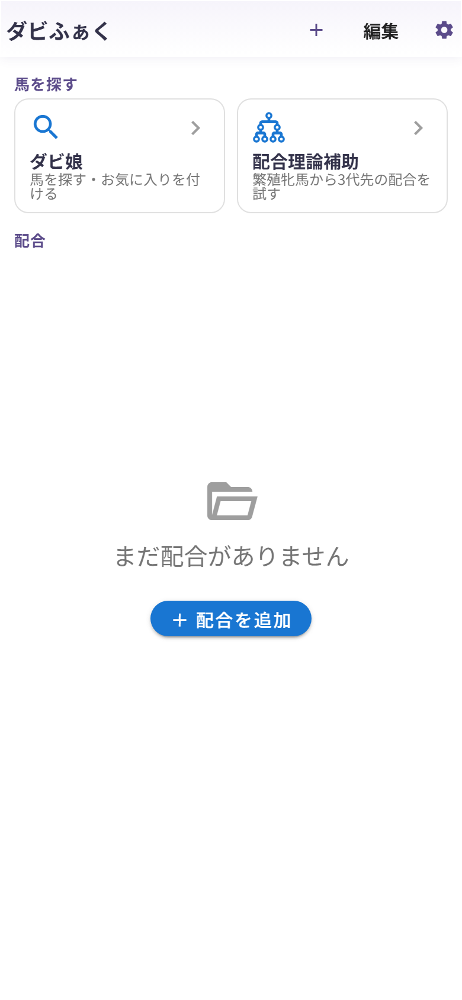
まだ何もない、キックオフ前の静けさ。
画面は上下2つに分かれていて、上が 「馬を探す」、下が 「配合」 です。
どちらも血統表とは別の独立した画面で、ここからいつでも行き来できます。
ホームに並ぶ「配合」は、1つが血統表1枚ぶん。作戦ボード1枚、と考えてください。
中央の 「＋ 配合を追加」 を押してみましょう。配合が1つでもあると、並びの最後に点線の 「配合を追加」 カードが出ます。右上の「＋」も同じ働きです。ちなみに右上の歯車マークは設定画面への入口です(第13章で)。
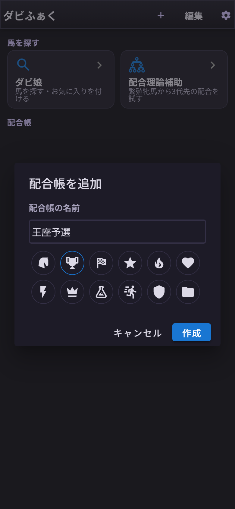
配合の名前(12文字まで)を入力して、12種類のアイコンから好きなものを選びます。入力欄には「例：ディープ産駒用、凱旋門賞狙い」と出ているので、何を狙った配合なのかで名前を付けると、あとで迷いません。
私は「王座予選」という名前にして、トロフィーのアイコンを選びました。優勝する気しかないので。
「作成」 を押すと、まっさらな血統表がそのまま開きます。
以前の検討内容がある方は、統合版を初めて開いたときに 「既存データ」という配合が自動で作られ、検討内容はその中にそのまま引き継がれます。データが消えることはないので、安心してくださいね。むしろ「あ、私の配合、個室をもらえたんだ」くらいの気持ちでいてください(笑)。
2回目以降にアプリを開くと、ホームではなく 前回開いていた画面 に直行します。配合を開いていたならその配合へ。ダビ娘や配合理論補助を開いたまま閉じたなら、その画面へ。「アプリを開く=即、作業再開」。ロッカールームに寄らずピッチに直行するタイプです。ホームに戻りたいときは、血統表の左上の 「←」 からどうぞ(第5章で)。
ホームで配合を開くと、見慣れた(初めての方は今日から見慣れる)血統表の画面です。
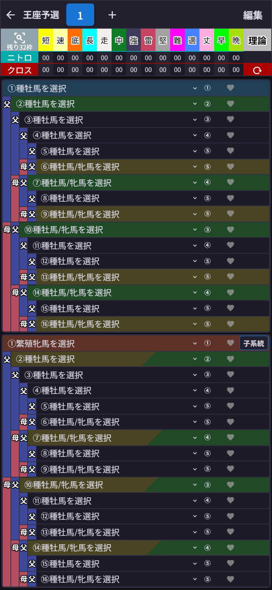
画面の上から順に、
という並びになっています。上に余計な帯がないぶん、血統表の1行1行が大きく取ってあります。
いちばん上の 「①種牡馬を選択」 をタップすると、検索ダイアログが開きます。
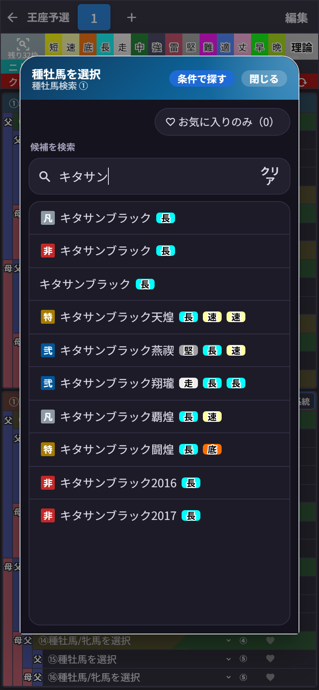
名前を入力すると候補がすぐに絞り込まれます。ひらがな・カタカナはどちらでも大丈夫。馬名の左右には小さなバッジが付いていて、これがなかなかの情報源です。
そしてこのバッジ、言葉で検索できます。たとえば「非凡あり」と打つと──
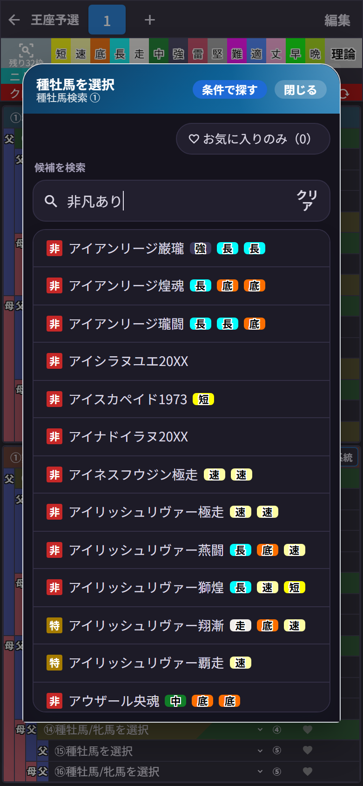
非凡持ちだけがずらり(弐重非凡・特化非凡も一緒に出ます)。「特化非凡」「弐重非凡」「因名祭」「自家製」のように、もっと絞った言葉も使えます。スカウト網の検索条件が細かい。頼もしいです。
ダイアログの上には、覚えておくと便利なボタンが3つ並んでいます。
その下の 「お気に入りのみ(0)」 は、❤ を付けた馬だけに候補を絞るスイッチ。これも第4章で一緒に説明しますね。
今回は説明用に、キタサンブラックを種牡馬に、エアグルーヴを繁殖牝馬に選んでみました。
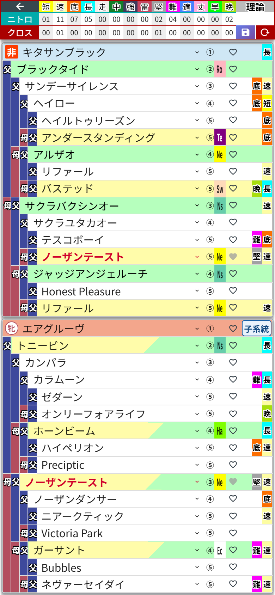
どうでしょう、この情報量!
自分で家系図を書いて数えていた時代を思うと、涙が出ます。
血統表は「先頭の2頭を選んだら終わり」ではありません。32マスすべて、どのマスも個別にタップして別の馬に差し替えられます。
「⑥だけ別の種牡馬にしたら、クロスがもう1本増えるのでは?」
「この④を因子持ちに替えたら、ニトロが伸びるのでは?」
……という細かい采配が自由自在。選手交代のカードを何枚でも切れる監督、最高です。
深いマスに馬を置いたとき、その手前が「★1薄め○○」のような馬で自動的に埋まることがありますが、これは正常な動きです(第9章で説明しますね)。
「種牡馬/牝馬を選択」と書かれた深いマスには、繁殖牝馬も置けます。牝馬を選ぶと、そのマスには 「牝馬名(その父の名前)」 の形で表示されて、頭に「牝」のバッジが付きます。主役はあくまで牝馬のほう、という並びです。
選ぶ画面で「この馬、母父は何だったっけ?」と思ったら、いちいち置いて確かめる必要はありません。
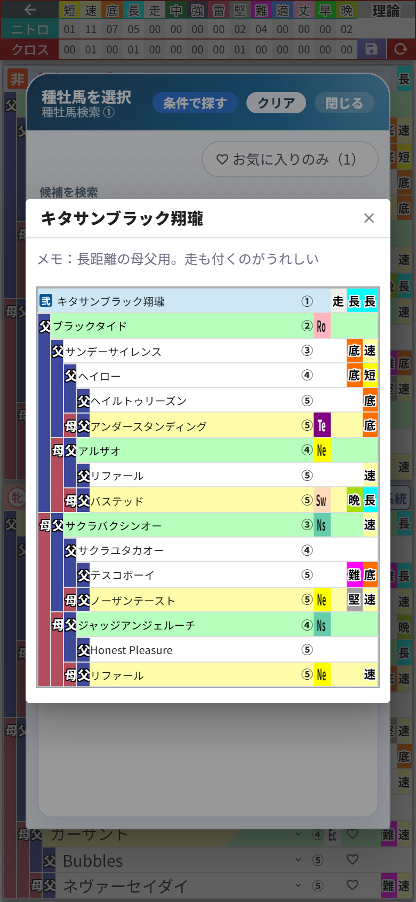
これで、その馬の5代血統表が別の画面で開きます。選んだことにはならないので、閉じればそのまま候補選びの続きです。メモ(次の項)を書いてある馬は、血統表の上にメモも出ます。置いてから外す、の往復がなくなるだけで、検討のテンポがまるで違います。
種牡馬にも繁殖牝馬にも、馬ごとのメモ(100文字まで、改行もできます)を残せます。「この子は短で使う」「母父に入れると見事が出やすい」といった、自分だけの選手名鑑です。
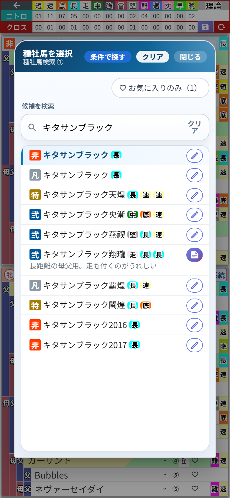
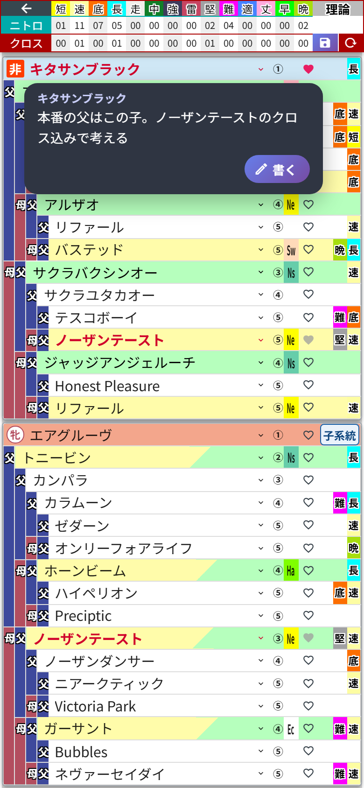
同じ馬なら、血統表のどのマスに出てきても同じメモが出ます。☆の馬(第10章)のメモは、保存した配合に付けるメモと同じものです。どちらで書いても、両方に反映されます。
ひとつだけ注意です。公式の種牡馬・繁殖牝馬のメモは この端末の中にだけ 残ります。スマホとPCで別々に使っている方は、それぞれで書いてくださいね。★の仮の馬とワタシノヒンバ(どちらも第9章)は実在の馬ではないので、メモの対象外です。
名前で探すだけなら第3章の検索ダイアログで十分なのですが、配合を詰めていくと、こういう探し方をしたくなりませんか。
「底力Aで、晩成で、ノーザンダンサー系の種牡馬っていない?」
「非凡持ちで、差しで、長距離が守備範囲の子を並べて見たい」
そのための専用の検索アプリが ダビ娘 です。これまで別のアプリだったものが、今回まるごとダビふぁくの中に入りました。スカウト部門がクラブハウスに引っ越してきた、と思ってください。
まずはホームから開いてみます。
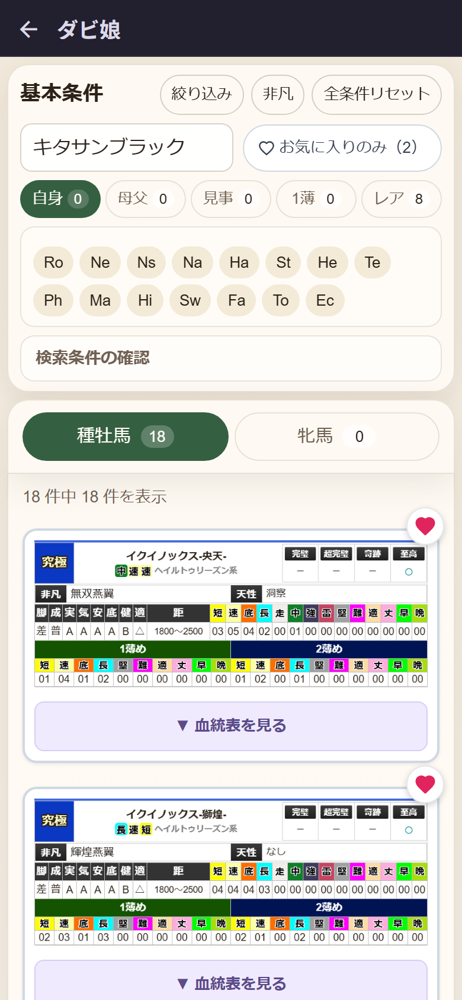
いちばん上が 「基本条件」 のブロックです。
結果は 種牡馬 / 牝馬 のタブで分かれていて、件数も出ます。カードの 「▼ 血統表を見る」 を押せば、その場で5代分の血統表が開きます。
ホームから開いた単体画面は、条件を何も指定していないうちは結果を出しません(「検索条件を選択してください」と出ます)。2,000頭以上を無条件で並べても仕方ないので、まずは条件から。
上部の 「絞り込み」 を押すと、条件の引き出しが一気に開きます。
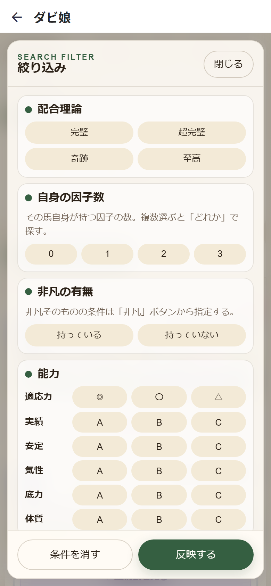
決めたら 「反映する」、やり直したければ 「条件を消す」。
「絞り込み」 の隣の 「非凡」 ボタンは、騎乗指示・レース・馬場状態・天候から非凡そのものを探すための専用パネルです。
ここまで条件を刻める検索、そうそうありません。私は「晩成・底力A・追込」で延々と眺めていて、気づいたら日付が変わっていました。
スマホ表示で血統表のマスをタップし、開いた検索ダイアログで 「条件で探す」 を押すと、同じダビ娘が下からせり上がってきます。
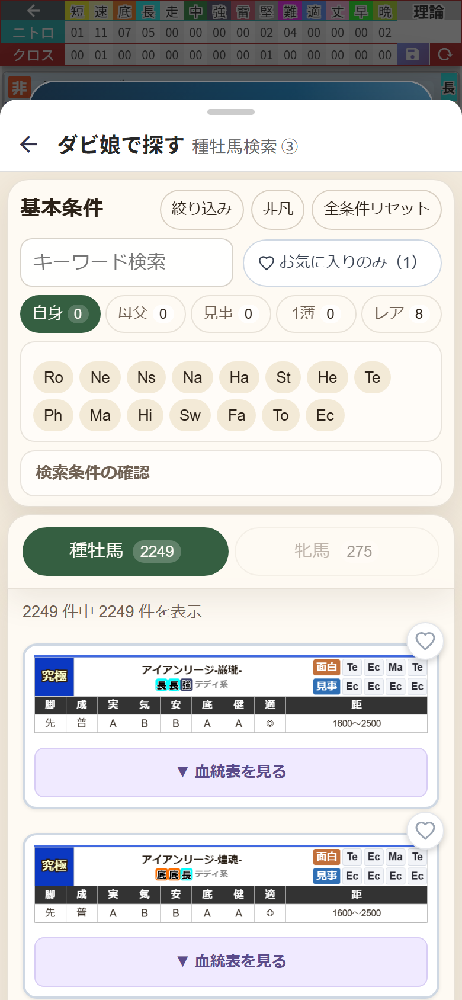
見出しが 「ダビ娘で探す」 に変わり、右に「種牡馬検索 ③」のように、いまどのマスを埋めようとしているかが出ます。そのマスに入れられる性別だけが最初から絞られているのも親切なところ。
選び方は2段階です。
これでシートが閉じて、血統表のマスに入ります。間違えたら 「やめる」 で戻れます。一拍置く手順のおかげで、誤タップで配合が崩れることがありません。
なお、ダビ娘にはいてもダビふぁく側にデータがない馬がわずかにいます。その馬を選ぶと「『○○』はダビふぁく未対応の馬です」と教えてくれます。マスと性別が合っていないときも「このセルには種牡馬しか入りません」のように止めてくれるので、安心してタップしてください。
カードの右上の ❤ をタップすると、その馬がお気に入りになります。そして、ここが気持ちいいところなのですが──
お気に入りの設定は、3つの場所で共有されます。
つまり「ダビ娘で気になる種牡馬に❤を付けておく → 血統表ではその子たちだけが候補に出る」という流れが作れます。手持ちの種付け権に❤を付けておくのが、いちばん実戦的な使い方だと思います。2,000頭のリストが、自分の20頭のリストに変わる。招集メンバーを絞ったあとの落ち着き、ありますよね。
❤ はダビふぁくが血統データを持っている馬にだけ付きます。対象外の馬にはそもそも❤のボタンが出ないので、押せる子だけを気楽に選んでいって大丈夫です。
画面上部に貼り付いている集計ヘッダーは、いわばスタッツボード。試合中ずっとチラチラ見るやつです。ここの読み方を覚えると、ダビふぁくの実況ができるようになります。
PC版だと、こんなふうに血統表2枚と一緒に横長で表示されます。
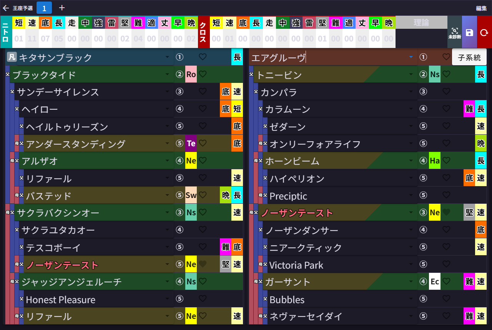
「短・速・底・長・走・中・強・雷・堅・難・適・丈・早・晩」 の14種類の因子について、血統表の中に何個あるかを数えてくれています。
血統表で馬を入れ替えるたびにリアルタイムで数字が動くので、「速のニトロをあと2つ積みたい……」という試行錯誤が捗ります。
クロス(インブリード)によって効果が発生している因子の数が、こちらの行に集計されます。クロスしている馬は血統表側で赤字になるので、「誰のクロスか」もひと目でわかります。
このクロス判定、中身がまるごと賢くなりました。血統データベースと突き合わせて馬を1頭ずつ識別するようになったので、同姓同名の別馬を取り違えません。血量の計算には牝馬の位置もきちんと入りますし、同じ家系の枝の中で重複して数えてしまうこともありません。
血統表の32マスがすべて埋まると、右上の「理論」のマスに配合理論の判定が入ります。判定されるのは、
面白 / 見事 / よくでき / 完璧 / 超完璧 / 奇跡 / 至高
の7種類。成立するとその理論の絵が出ます。奇跡と至高の判定条件も本家仕様どおりに見直されているので、ここが光ったら胸を張ってください。
まだ空いているマスがあるうちは、「理論」の文字の下に 「残り○枠」 と出ます。あと何マス埋めれば判定されるのかが、ひと目でわかります。
このマス、実はボタンにもなっています。
そしてもうひとつ、大事な機能。クロスの血量が濃くなりすぎた配合(合計血量50%以上)は、理論のマスに 「危険」 と赤く表示されます。
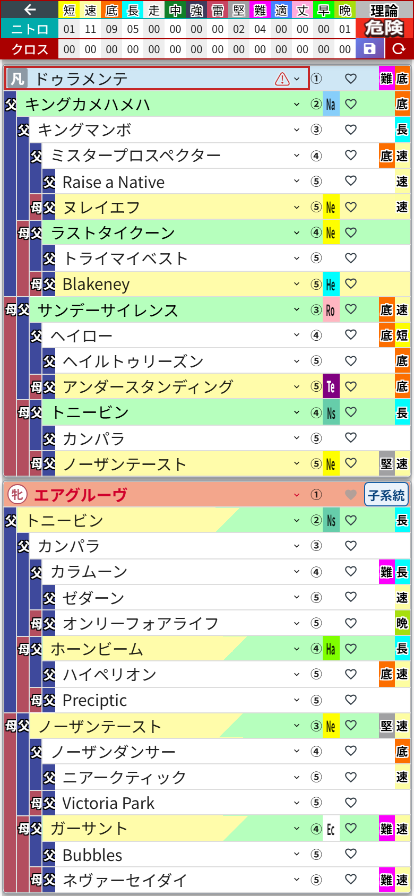
この画面は、父にドゥラメンテ、母にエアグルーヴを置いた例です。ドゥラメンテのおばあさんがエアグルーヴなので、血が濃くなりすぎました。どんな理論が同時に成立していても、危険が最優先で表示されます。父のマスの⚠と赤枠は、第6章の工程診断が付けた印です。攻めの采配は好きですが、これはさすがにレッドカード。素直に組み直しましょう。
スマホ版では、右下のマスが フロッピーと赤い矢印の2つ並び になっています。子系統・メモモード(第8章)のときは、フロッピーだけの大きなマスになります。
赤い矢印を押すと、いきなり消えたりはせず、確認の画面が出ます。
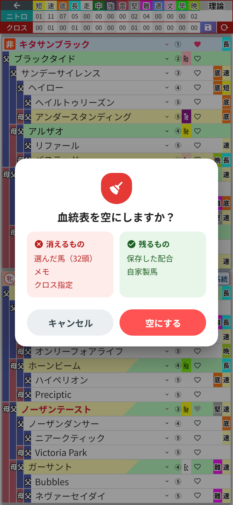
消えるもの(選んだ馬・マスのメモ・クロス指定)と 残るもの(保存した配合・自家製馬=☆の馬)が並んでいるので、読んでから 「空にする」 を押してください。効くのは 今の配合だけ なので、ホームに並んでいる他の配合は無事です。とはいえ押す前に深呼吸を。
ダビマス勢の腕の見せどころといえば、段階配合。基礎になる繁殖牝馬に何世代か種牡馬を付けて、理想の牝系を自分で作り上げていく、あの長期プロジェクトです。シーズン単位でチームを作り込む、クラブ運営そのものですね。
ただ、段階配合にはこわい落とし穴があります。最終形ばかり見ていると、途中の世代が「危険な配合」になっていることに気づかないんです。ゲーム内で3世代目まで進めてから発覚したときの絶望感といったら……。
それを防いでくれるのが 工程診断 です。しかも最新版では、血統表が埋まった時点で 勝手に診断してくれます。
血統表の母側が、そのまま「段階配合の計画表」になります。
深い枠から先に選んでも、あとから浅い枠を選んだときに奥の馬が消えることはありません。奥から手前へ、世代の順に置いていけば大丈夫です。
最後のマスを埋めると、基礎繁殖牝馬から順に「工程1の産駒はどうなる? その仔にまた種牡馬を付けたら?」と、仮想の繁殖牝馬を1世代ずつ作りながら全工程を判定してくれます。危険な工程が新しく見つかったときは、結果パネルが下から自動で開きます。
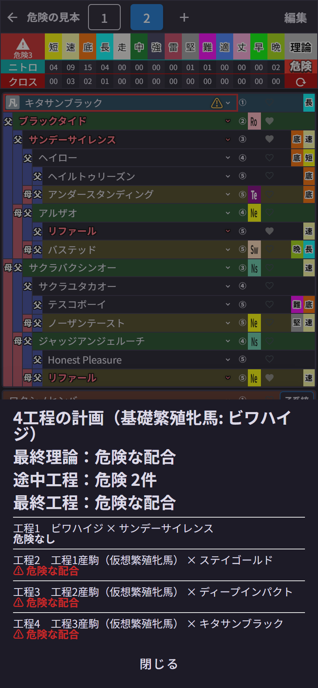
この例は、ビワハイジを基礎にして、サンデーサイレンス→ステイゴールド→ディープインパクト→キタサンブラックと付けていく4工程の計画です。……なのですが、ご覧のとおり工程2以降が軒並み 危険な配合。サンデーサイレンス系で固めすぎました。監督の私、机に突っ伏しています。
パネルの上段には、計画全体のまとめが4行で出ます。
その下に工程が1つずつ並び、危険な工程には ⚠ 危険な配合 と赤字が付きます。血統データが足りない馬が混ざった工程は「判定不能」と、理由まで添えて教えてくれます。
パネルを閉じても結果は残ります。
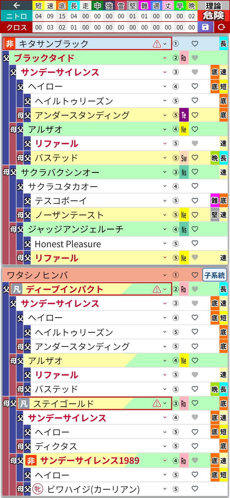
血統表では 危険な工程の種牡馬に「⚠」マーク が付いて、そのマスが赤く囲まれます。どの種牡馬が問題だったのか、ボードの上でひと目でわかる。この安心感です。もう一度パネルを見たいときは、「理論」のマスを押せば 開きます。
父側のいちばん上(①)が、「★1薄め○○」のような仮の馬や、自分で保存した☆の馬のこともありますよね。その種牡馬を作るまでにも、段階配合の工程があるはずです。
そんなときは、父側の血統表も計画表として読み取って、種牡馬側の工程 も一緒に診断してくれます。パネルは 「繁殖牝馬側の工程」 と 「種牡馬側の工程」 の2段に分かれ、種牡馬側のまとめには「種牡馬が生まれる工程」の判定が出ます。自分で組んだ種牡馬ほど途中の工程を忘れがちなので、これは本当に助かります。
途中で危険が出たら、その工程の種牡馬を差し替えるだけ。差し替えたそばから診断し直してくれるので、何度でも試せる贅沢な機能です。
第6章の工程診断が「組み上げた計画を最後に検査する」機能だとすれば、こちらは 「1代ずつ積み上げながら、その都度どんな理論が成立するか見ていく」 機能です。ゲーム本編の配合理論補助と同じ組み立て方ができます。
ホーム画面の 「配合理論補助」 カードから入ります。画面は STEP 1 / STEP 2 / STEP 3 の3段。前の代を決めるまで、後ろの代は開きません。「1代目の種牡馬を選ぶと使えるようになります」と、おとなしく順番待ちをしています。
「＋ 繁殖牝馬を選ぶ」 を押すと、第4章のダビ娘が開きます。起点にしたい繁殖牝馬を選んでください。
次に 「＋ 種牡馬を選ぶ」。ここでダビ娘がひと仕事します。
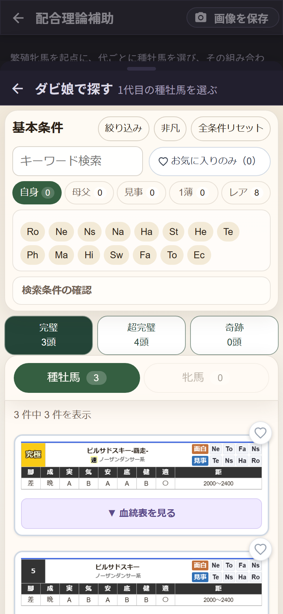
見出しが 「1代目の種牡馬を選ぶ」 に変わり、検索条件の下に見慣れないボタンが3つ並びました。
完璧 3頭 / 超完璧 4頭 / 奇跡 0頭
これは「いま選んでいる繁殖牝馬に対して、その理論が成立する種牡馬が何頭いるか」の実数です。押すとその候補だけに絞り込まれます。2,250頭が3頭になる。初めて押したときは、思わず声が出ました。
しかもこの件数、危険な配合になる組み合わせは除いてあります。数えてくれたうえに、危ない相手は最初から外してくれている。気が利きすぎです。
種牡馬を選ぶと、こうなります。
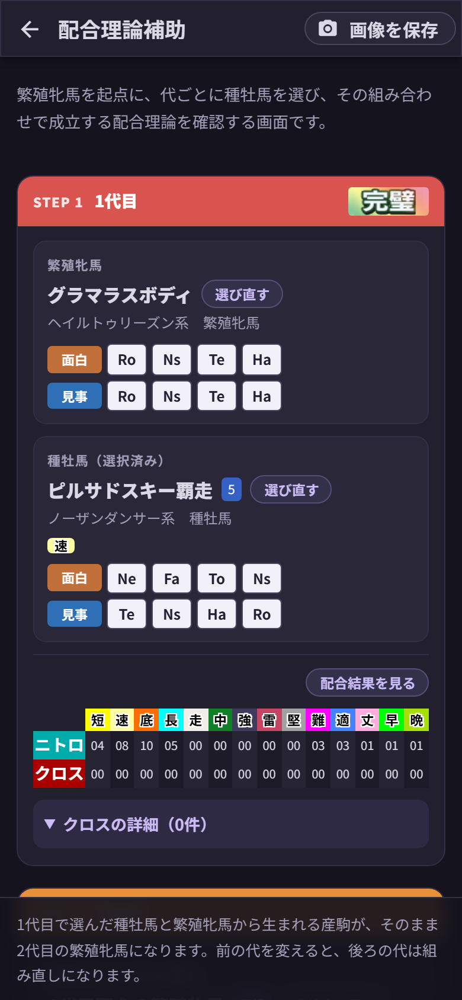
「配合結果を見る」 を押すと、選んだ1組の32マスを血統表の形で確認できます。
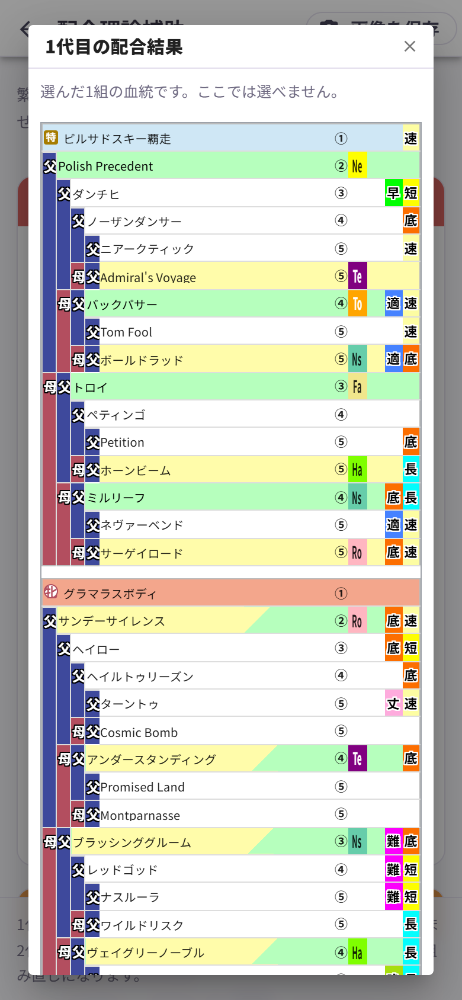
本体の血統表とまったく同じ見た目で、クロスの馬名もちゃんと赤字。ここでは馬は選べません。見るだけの画面です。
そして大事なのがこの一文。
1代目で選んだ種牡馬と繁殖牝馬から生まれる産駒が、そのまま2代目の繁殖牝馬になります。
STEP 2 の繁殖牝馬の欄には 「1代目配合の繁殖牝馬」 と 「仮想」 のラベルが付いています。「血統表を見る」 を押せば、その仔の血統がどう組み上がったかも確認できます。あとは同じ手順で2代目・3代目の種牡馬を選んでいくだけ。下部組織から昇格させた選手を、また次のシーズンの主力に育てていく感覚です。
前の代の種牡馬を 「選び直す」 と、後ろの代はいったん白紙に戻って組み直しになります。土台を入れ替えたのだから当然なのですが、3代目まで詰めたあとにやると、ちょっとだけ切ないです(笑)。
右上の 「画像を保存」 で、3代ぶんの画面を丸ごと1枚の画像にできます。スクロールで隠れている部分まで全部入ります。
この機能、あると助かる理由がありまして。配合理論補助の計画は、画面を出ると消えます。血統表の配合と違って自動保存はされないので、「この組み立て、あとで見返したい」と思ったら画像を保存しておくのがいちばん確実です。ホワイトボードの前でスマホを構える監督、わりといますよね。あれです。
作戦ボードには裏面があります。
血統表の右側にある 「子系統」ボタン(母側カードの1行目の右端。PC版は集計ヘッダーの「クロス」のマス)をタップしてみてください。
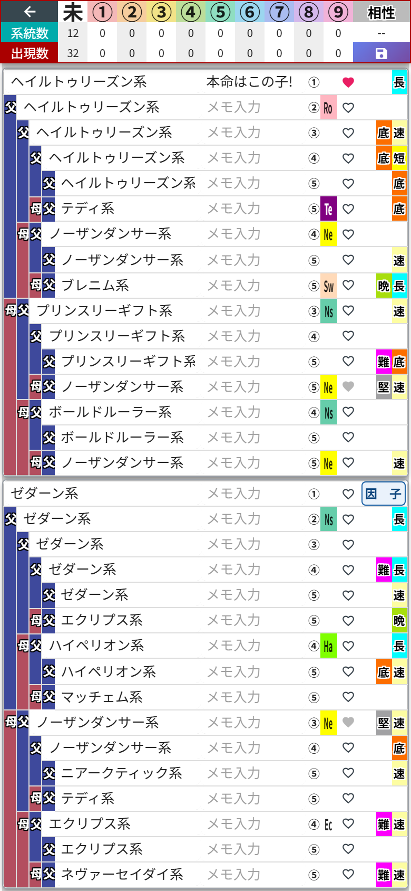
画面がガラッと変わりました。これが子系統・メモモードです。
さっきまで馬名だった場所に、その馬の子系統(ヘイルトゥリーズン系、ノーザンダンサー系……)が表示されます。面白配合の条件を考えるとき、「父側と母側で系統がどれだけ散らばっているか」を確認する作業が欠かせないのですが、それがこの一画面で済みます。系統図を思い浮かべながらニヤニヤする時間です。
このモードでは、上の集計ヘッダーがニトロ・クロスから 系統サマリー に切り替わります。
色分けを設定しておくと、血統表の系統名にもその色が付くので、「ノーザンダンサー系が母側に固まってるな」が一瞬で見えるようになります。
右上には 「相性」 のマスがあります(ふだんの画面の「理論」のマスと同じく、押すと工程診断、長押しで画像保存です)。32マスが埋まっていると、種牡馬と母系の系統の組み合わせから、ゲームでいう相性(ニックス)を判定して 完璧 / 優れた / 良い / 程々 の4段階で表示してくれます。該当する組み合わせがないときは「--」のまま。この画面のキタサン×エアグルーヴも「--」でした。相性まで揃えようとすると、また夜が長くなります。
「完璧」と「優れた」の差はどこで付くのか。ここだけ、少し算数の時間をください。
相性で見られるのは、種牡馬の子系統と、繁殖牝馬側の4頭の子系統の組み合わせです。4頭というのは、繁殖牝馬の 父・母父・母母父・母母母父。牝系をまっすぐさかのぼったところにいる種牡馬たちですね。
組み合わせごとに決まった「相性値」があって、それに 種牡馬のレア度と枠で決まる係数 をかけて足し合わせます。係数の表はこちら。
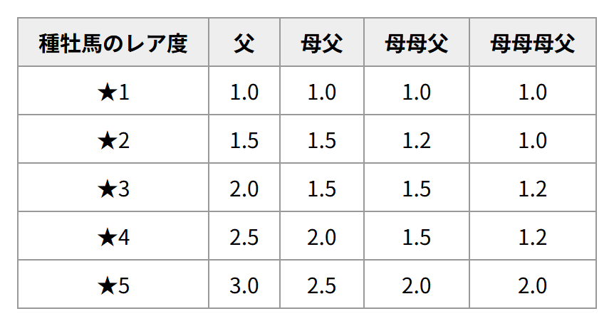
レア度を持たない馬(「★1薄め○○」や☆の馬)が種牡馬の位置にいるときは、計算できないので「--」のままです。
計算のルールは4つです。
4つ目の条件は少し細かいです。まず、産駒から見て 繁殖牝馬側の3代前(繁殖牝馬の母父) と 種牡馬側の4代前(種牡馬の父父父・父母父・母父父・母母父) に同じ馬がいること。種牡馬側の4か所のうち、一致するのは ちょうど1か所 でなければなりません。2か所以上で一致すると付かず、3と4の向きが逆(種牡馬側が3代前、繁殖牝馬側が4代前)でも付きません。さらに、「父」の枠の点が6点以上あることも必要です。配合理論の「奇跡」が成立するかどうかとは関係なく付きます。
合計点で表示が決まります。
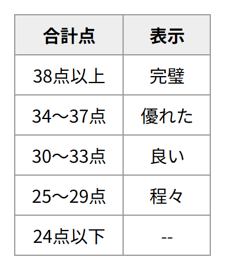
レア度が高いほど係数が大きく、とくに「父」の枠が重いのがわかります。★5の種牡馬なら、繁殖牝馬の父の系統選びがそのまま勝負を分けます。
数字だけだとピンと来ないので、実際に「完璧」になる組み合わせを分解してみます。種牡馬は ステイゴールド(★5、ヘイルトゥリーズン系)、繁殖牝馬は ダダナイト です。
ダダナイトの牝系の4頭と、ステイゴールドの系統との相性はこうなっています。
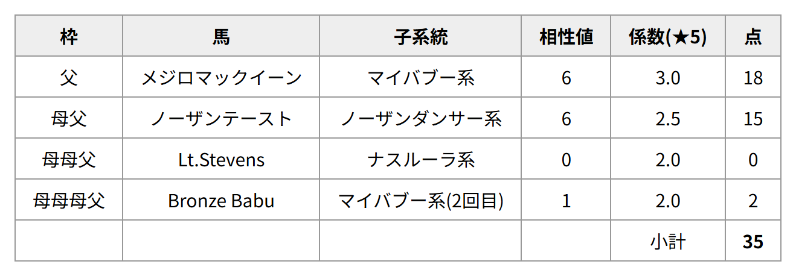
ここまでで35点。表示でいうと 「優れた」 です。……あと3点。
その3点を運んでくるのが、4×3クロスのボーナス です。ダダナイトの母父は ノーザンテースト(産駒から見て3代前)。そしてステイゴールドの母母父も ノーザンテースト(産駒から見て4代前)。種牡馬側の4か所のうち、ここ1か所だけで一致しています。「父」の枠も18点で、6点以上の条件を満たしています。
35+3=38点。ちょうど「完璧」の線に届きました。
相性値の高い系統で前線を固めて、最後はノーザンテーストのクロスで押し込む。アディショナルタイムの決勝点みたいな勝ち方で、何度見ても気持ちがいいです。
各マスの「メモ入力」欄には、マスごとに自由なメモを書けます。私はさっそく1行目に「本命はこの子!」と書きました。字面が完全に推し活ですが、配合検討も推し活なので合っています。
のような検討途中の思考を置いておくのにぴったり。メモももちろん自動保存で、配合ごとに残ります。こちらは「この配合のこのマス」へのメモ。馬そのものに付けるメモ(第3章)とは別物です。
同じ場所のボタンが 「因 子」 という表記に変わっているので、それをタップすれば元の血統表モードに戻ります。表→裏→表と、何度でも行き来してOKです。このモードでも、右下のマスは 保存ボタン(フロッピー) のまま。保存の話は第10章で。
血統表の各行に、小さなハートのボタンが付いているのに気づきましたか?
これは「この馬をクロス扱いにする」を手動で指定するボタンです。ゲーム内の特殊なルールでクロスが成立するケースなど、自動判定に乗らない組み合わせを自分で指定したいときに使います。
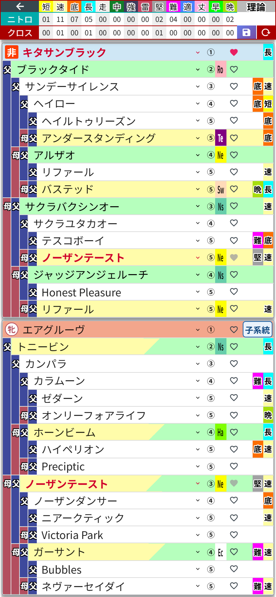
キタサンブラックのハートをタップしてみました。馬名が赤字になってハートがピンクに灯り、集計ヘッダーのクロスの行にもちゃんと数字が反映されています(「長」が01になりました)。
ハートの見た目は3種類あります。
そう、手動指定ができるのは血統表が全部埋まってから。途中の段階では全部グレーで並んでいますが、故障ではありません。メンバー表が揃うまでは交代カードも切れない、ということですね。
血統表をいじっていると、名前が 「★」から始まる馬 が現れることがあります。たとえば深いマスに種牡馬を置いたとき、その手前の枠が「★1薄めブラックタイド」のような馬で埋まる、あの現象です。
これはダビふぁくが自動で作る仮の馬で、「この配合を成立させるには、間にこういう馬を挟む必要がありますよ」という印。ゲームでいう薄め配合のつなぎ役です。母側の先頭に現れる「ワタシノヒンバ」も同じ仲間で、まだ名前のない自分の繁殖牝馬を表しています。
★の馬は因子のデータを持っていないので、マスを選ぶと、その行の因子の欄に 「因子」ボタン が出ます(第8章の表裏を切り替える「因子」とは別物です)。タップすると因子選択ダイアログが開いて、その馬に持たせたい因子を 短・速・底・長・堅・難から1〜2個 選べます。設定した因子は、もちろんニトロ集計にも反映されます。ゲームで生産した馬の因子をそのまま入れておけば、集計もずれません。
なお、★の馬はクロス判定の対象外です。仮の馬どうしで赤字が出てしまわないようになっています。
ちなみに、似た記号で 「☆」から始まる馬(検索では「自」バッジ)もいますが、こちらは自分で保存した配合から生まれた馬。次の章の主役です。自前で育てた選手、と言えばもう伝わりますね。
「この配合、いつかまた使うから取っておきたい」
そんなときのために、配合の保存・復元 機能があります。しかもこれ、ただの保存ではありません。保存した配合から生まれる仔を、種牡馬・繁殖牝馬として次の配合に使えるんです。
集計ヘッダーの フロッピーのマーク をタップすると開きます(スマホ版は右下のマスにあります)。
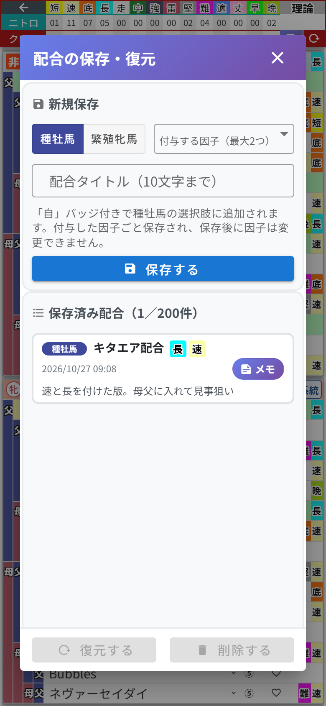
手順は3つだけ。
私は「キタエア配合」で保存しました。ネーミングセンスは見逃してください。
保存すると、復元用のデータと一緒に 「☆キタエア配合」という馬 が誕生して、馬の検索候補に加わります。
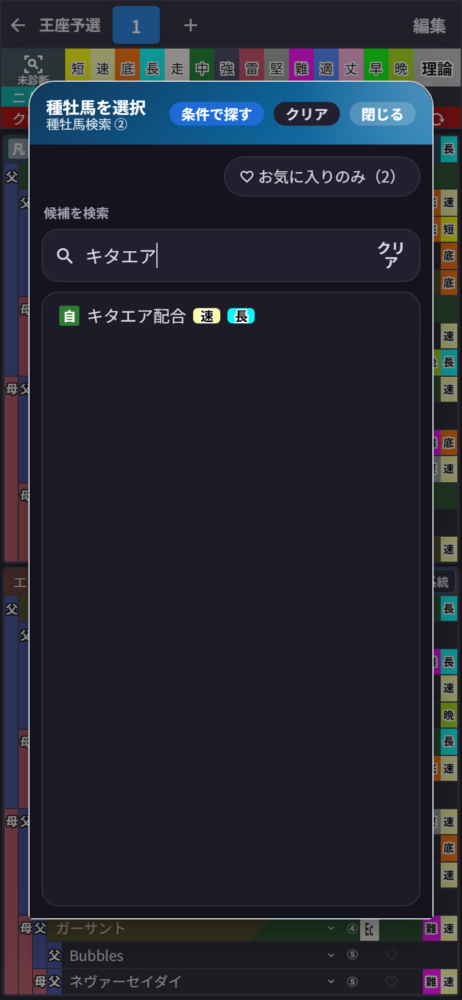
検索で「キタエア」と打てば、「自」と「牡」のバッジ付きでちゃんと出てきます(繁殖牝馬として保存したなら「自」と「牝」)。「自家製」という言葉でも検索できます。この馬を血統表に置けば、5代分の血統も付与した因子もそのまま引き継がれます。自分の配合で作った仔に、次の相手を探す──段階配合の設計が、ぐっとやりやすくなりました。
付与した因子は、保存したあとで変更できません。ダイアログにも「保存後に因子は変更できません」とあるので、因子は保存前に決め切ってください。
リストから配合を選んで 「復元する」 を押すと、選んだ保存済みの配合が、今開いている配合の血統表に展開されます。「削除する」 で保存済みリストからの削除もできます。
保存できるのは 200件まで で、リストの見出しに「保存済み配合(○／200件)」と出ます。200件に達したら、古い配合を削除してから保存してください。
削除するときは「○○の選択肢からも外れます」という確認が出ます。☆の馬が候補から消えるので、一度外すと、もう選び直せなくなるという意味です。ここは落ち着いて読んでからどうぞ。
昔のバージョンで保存した配合が残っている場合は、「配合」バッジ付きで表示されます。こちらは復元専用で、馬としては検索に出ません。
保存済みの配合には、1件ずつ メモ(100文字まで、改行もできます)を付けられます。日付の行の右端にある 「メモ」 ボタンを押すと、メモを書く画面が開きます。
このメモは、その配合から生まれた☆の馬のメモ(第3章)と同じものです。選ぶ画面の鉛筆や、血統表のマスの吹き出しから書いても、ここに反映されます。「因子は速2で付けた」「母父用に作った」──自前の選手のプロフィール欄ですね。
「ホームに配合を並べられるなら、保存機能はいらないのでは?」と思った方、鋭い。イメージはこうです。
そして大事なポイント。保存した配合(と☆の馬)は、ホームのどの配合からでも使える共有の財産です。ホームの配合を削除しても消えません。
ここが統合版のいちばんの推しポイントです。
「今の配合、父だけ別の馬にしたらどうなる?」……試したいけれど、今の血統表は崩したくない。そんなときは、配合を まるごと複製 してしまいましょう。
すぐ隣に 「王座予選のコピー」 のような配合が生まれました。中身は元の配合とそっくり同じ。血統表も、メモも、手動のクロス指定も、ぜんぶ一緒にコピーされています。名前は12文字までなので、長い名前のときは元の名前の後ろが少し削られます。
「完了」で編集モードを終えて、コピーのほうを開けば、あとは自由に選手交代です。
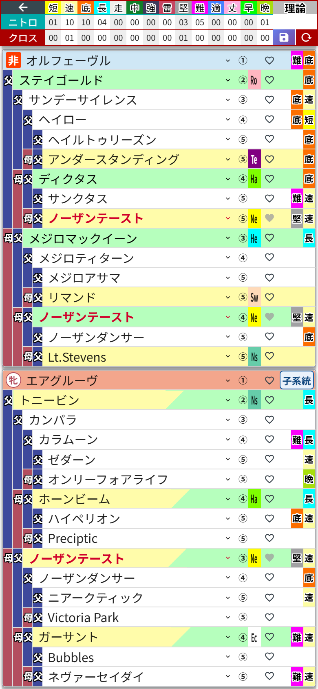
コピーのほうで、父をキタサンブラックからオルフェーヴルに替えてみました。底のニトロが07から10に伸びています。元の配合はそのまま残っているので、ホームに戻って開き直せば、いつでも見比べられます。「プランAとプランB、ニトロの伸びはどっちが上だろう?」が、カードのタップだけで確かめられる。4-3-3と4-4-2を並べて悩む監督の気持ち、味わえます。
名前を「王座予選B」のように付け直したいときは、編集モードでカードをタップすれば変えられます(第12章)。
ホームに戻る瞬間に今の配合を保存して、カードをタップした瞬間にその配合を読み込んでいます。だから 保存ボタンを押す必要は一切ありません。第10章の「配合の保存」は、完成した配合を☆の馬として残すための別の機能です。
血統表の左上の 「←」 でホームに戻れます(このときも今の配合は自動保存されます)。
配合をいくつか作ると、ホームはこんな感じになっていきます。
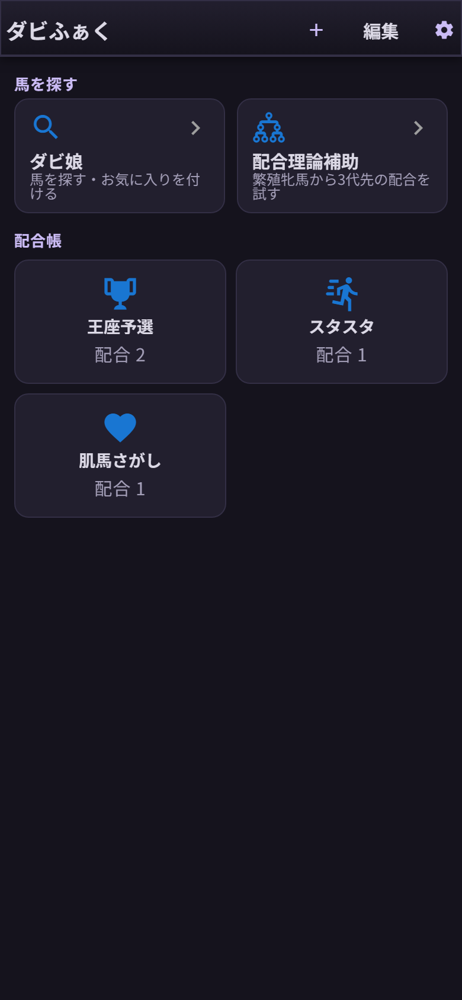
スマホは2列、タブレットは3列、PCは4列で並びます。並びの最後にある点線の 「配合を追加」 カードから、いつでも新しい配合を足せます。
右上の 「編集」 を押すと、編集モードに切り替わります。
終わったら「完了」で通常モードへ。
ひとつだけ、監督としての注意事項です。
配合を削除すると、その血統表・マスのメモ・クロス指定もまとめて消えます。確認ダイアログは出ますが、取り消しはできません。
一方で、保存した配合と☆の馬、馬のメモ、ダビ娘の❤は、どれも共有の財産です。ホームの配合を消しても残ります。「消す前に、残したいプランは配合保存へ」──これを合言葉にしてください。
ホーム画面の右上、歯車のマークから設定画面に入れます。メニューは6つ。どれも、自分の使い方に合わせてボードを整えるための機能です。
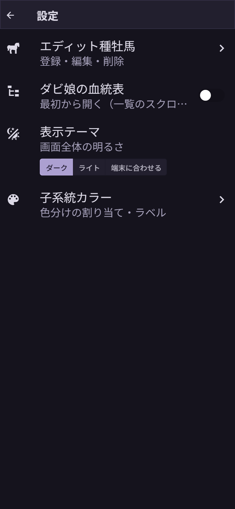
ダビマスにはエディット種牡馬(自分のゲームで作った、因子付きの種牡馬)がいますよね。あの子たちをダビふぁくにも登録して、検索候補に並べられます。
「＋登録」 を押すと、登録ダイアログが開きます。
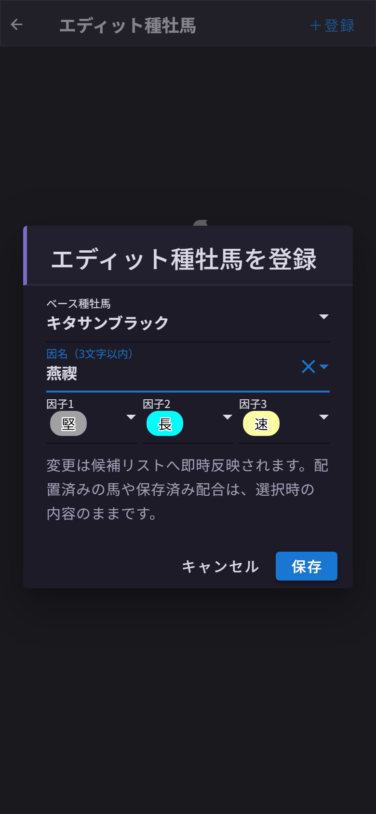
保存すると「キタサンブラック燕禊」のような名前で、「E」バッジ付きで検索候補に加わります。登録できるのは100件まで。一覧からいつでも編集・削除できます(変更はすぐ候補に反映されます。すでに血統表に置いた馬や保存した配合は、選んだときの内容のまま残ります)。
自軍のエディット種牡馬が普通に検索で出てくる。地味なようで、使い始めると戻れない機能です。
第4章のダビ娘で、馬のカードの血統表を 「最初から開く」 かどうかのスイッチです。
既定はオフ(畳んだ状態)。カード1枚に15行ぶんの血統表が付くので、常に開いておくと一覧のスクロールがかなり重くなります。「血統を見ながら流し読みしたい」という日はオン、「とにかく速く一覧をめくりたい」日はオフ。
第6章の工程診断を、血統表が埋まったときに自動で行うかどうかのスイッチです。既定は オン。
オンなら、危険な工程の種牡馬に⚠が付いて赤枠で囲まれ、新しい危険が見つかったときは結果パネルが開きます。オフにすると診断そのものを行わないので、⚠も出ず、「理論」のマスを押してもパネルは開きません。段階配合をしない日は、オフで静かに組むのもありです。
ダーク / ライト / 端末に合わせる の3択です。既定は ライト。この記事の画面もライトで撮っています。
夜に布団の中で配合を考える派の方は、ダークがおすすめです。画面の地が黒くなって、目にやさしくなります。血統表の色分け(緑=面白枠、黄=見事枠、紺=父、臙脂=母)も、色合いはそのままで、明るさだけ落としてあります。読み方は変わりません。
「端末に合わせる」を選ぶと、スマホやPCの設定に追従します。夜だけ暗くなってほしい派の方は、これが正解。選んだ瞬間に切り替わって、次に開いたときも覚えています。
スマホの血統表に出る馬名の大きさを、大 / 小 から選べます。既定は 小。
大にすると馬名が読みやすくなるかわりに、長い名前は後ろが切れやすくなります。「★1薄めシンボリルドルフ巌瓏」のような長い名前をよく使う方は小、見やすさ優先なら大。ここはもう好みなので、両方試してみてください。
最後のメニューが 子系統カラー。58ある子系統に、9つの色を自由に割り当てられます。
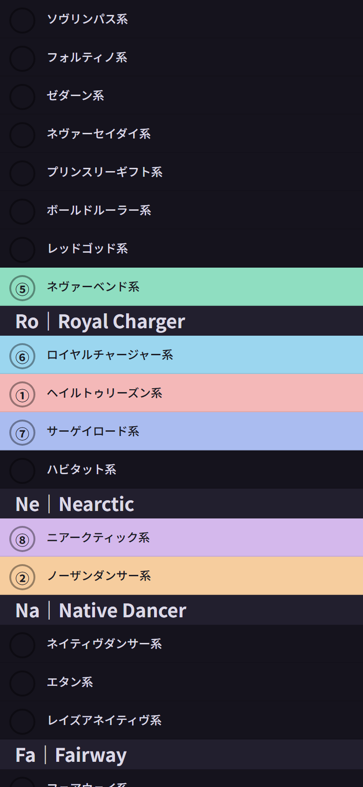
子系統は親系統(Ec｜Eclipse、Ph｜Phalaris、Ns｜Nasrullah……)ごとにグループ分けされていて、行をタップすると色を選べます。画面上部には 「設定済み ○ / 58」 のカウンター。「色ラベル」 から各色に名前(10文字まで)を付けられるので、「①=スピード系」「②=スタミナ系」のような自分ルールも作れます。「すべて解除」 でいつでもまっさらに戻せます。
ここで割り当てた色は、第8章の子系統・メモモードの色分けと系統サマリーの集計にそのまま反映されます。ユニフォームの色分けを決めるのは監督の仕事。自分の目が追いやすい配色を、ぜひ探してみてください。
最後に、監督就任初日に聞かれがちな質問をまとめておきます。
Q. 保存ボタンが見つかりません……
A. 探さなくて大丈夫、上書き保存のボタンはありません。馬を選んだ瞬間・メモを書いた瞬間に自動保存されています。アプリを閉じても、ホームボタンからバックグラウンドに送っても、次に開けば続きからです。集計ヘッダーのフロッピーのマスは、配合を☆の馬として残すための別の機能です(第10章)。
Q. 画面を暗くできますか?
A. できます。設定の 「表示テーマ」 から「ダーク」を選んでください(第13章)。「端末に合わせる」もあります。
Q. 血統表を画像で残したいです
A. 「理論」のマスを 長押し してください。マスの色が変わったところで指を離すと、血統表を画像で保存できます(第5章)。配合理論補助の画面には、専用の 「画像を保存」 が付いています(第7章)。
Q. 左上のボタンで工程診断ができなくなりました
A. 左上は 「←」(ホームへ戻る) になりました。工程診断は血統表が埋まると自動で行われ、結果は「理論」のマスを押すと見られます(第6章)。⚠も結果パネルも出ないときは、設定の 「工程診断を自動で行う」 がオフになっていないか確かめてください(第13章)。
Q. 上にあった配合のタブ(1・2・＋)がなくなりました
A. ホームの1つのカードが、配合1つになりました。プランを並べたいときは、ホームの編集モードの 「複製」 を使ってください(第11章)。
Q. 理論のマスに赤く「危険」と出ます
A. クロスの血量が合計50%以上になっています(第5章)。どの理論が成立していても危険が最優先で表示されるので、血統表で赤字の馬を確認して組み直してあげてください。
Q. 理論のマスに何も出ません
A. 理論判定は血統表の32マスすべてが埋まってからです。空きマスがあるうちは判定されず、「理論」の下に「残り○枠」と出ます(第5章)。ハートが全部グレーのときも同じ理由です(第9章)。
Q. リセットボタン(赤い矢印)を押したら全部消えますか?
A. 消えるのは 今開いている配合の中身(選んだ馬・マスのメモ・クロス指定)だけ です。押すと確認が出るので、そこで 「空にする」 を選んだときだけ消えます。ホームの他の配合、保存済みの配合、☆の馬には影響しません(第5章)。
Q. ホームの配合を削除したら、保存した配合やお気に入りも消えますか?
A. 消えません。「配合の保存」と☆の馬、馬のメモ、そしてダビ娘の❤は、どの配合からも使える共有の財産です(第12章・第10章)。削除で消えるのは、その配合の血統表・マスのメモ・クロス指定です。
Q. 馬のメモが、PCとスマホで食い違います
A. 公式の種牡馬・繁殖牝馬のメモは、書いた端末の中にだけ残ります(第3章)。それぞれの端末で書いてください。
Q. ダビ娘で❤のボタンが出ない馬がいます
A. ダビ娘にはいても、ダビふぁく側に血統データが無い馬がわずかにいます。その馬には❤のボタンが出ず、血統表にも置けません(選ぶと「ダビふぁく未対応の馬です」と出ます)。データが増えれば使えるようになります(第4章)。
Q. 配合理論補助で組んだ計画が、次に開いたら消えていました
A. 仕様です。あの画面の計画は自動保存されないので、残したいときは右上の 「画像を保存」 を使ってください(第7章)。血統表で組む段階配合のほうはホームの配合に自動保存されるので、そちらと使い分けるのがおすすめです。
Q. 相性が「--」のままです
A. 32マスが埋まっていない、種牡馬の位置にレア度のない馬(★薄めの馬や☆の馬)がいる、相性(ニックス)に該当する系統の組み合わせがない、のどれかです(第8章)。「--」は故障ではなく「特筆すべき相性なし」のサインです。
Q. ダビ娘の一覧が重い気がします
A. 設定の 「ダビ娘の血統表」 のスイッチがオンになっていませんか。オフにすると軽くなります(第13章)。
Q. 電波のないところでも使えますか?
A. 一度開いたことがあれば、オフラインでもかなり動きます。第1章の「ホーム画面に追加」をしておくのがおすすめです。
ここまで読んでくださって、本当にありがとうございました。
配合を考える時間って、レースそのものと同じくらい……いえ、もしかしたらそれ以上に楽しい時間だと思うんです。生まれてくる仔馬はまだ走っていないのに、頭の中ではもう府中の直線を先頭で駆け抜けている。その妄想を、ダビふぁくは全力で応援してくれます。
配合を並べて、複製して、ダビ娘で❤を付けて、ニトロを数えて、工程診断の⚠に頭を抱えて、それでも☆の馬に夢を託す。
それはもう立派な、あなただけのクラブ運営です。
皆さんの厩舎から最強馬が誕生したら、ぜひこっそり教えてください。
私も「王座予選」の配合、もう少し複製を増やしてきます(笑)。
それでは、また次の記事でお会いしましょう。
最後までお付き合いいただき、ありがとうございました!
記載の使い方・画面はツール「ダビふぁく」統合版のものです。